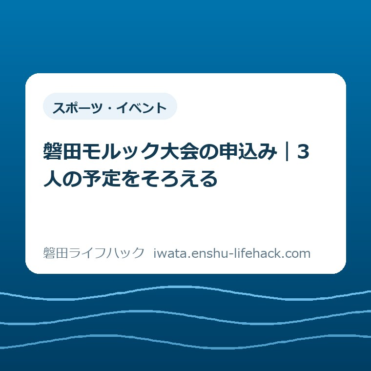

スポーツ・イベント
磐田モルック大会の申込み｜3人の予定をそろえる

この記事の要点
Q. 家族や友人と磐田モルック大会に申し込むには？
A. 市内在住・在勤・在学の小学3年生以上が対象で、3名以上で電子申請します。締切は11月9日18時。11月21日開催、応募多数は抽選です。今日は参加候補者の予定を確認し、最新条件は市公式ページで確かめてください。
家族の予定を合わせるところから、もう準備は始まっている
磐田モルック大会への参加条件は、参加する人の学年や居住・通勤・通学の状況で変わります。家族で一緒に行けるからといって、全員が競技に参加できるとは限りません。最初に大会の条件と、一緒に出たい人の条件を照らし合わせます。
子どもの学校行事、保護者の仕事、友人の習い事。土曜日の午前を合わせるだけでも、連絡をする人には手間がかかります。返事を待っているうちに申込期限が近づくこともあるでしょう。参加を取りまとめる家族の仕事は、申込画面を開く前から始まっています。
大石浩之（磐田市／不動産業）です。私は、こうした催しを費用だけで「参加しやすい」と評価しないようにしています。家族の予定を聞き、移動を考え、当日の付き添いを決める時間も負担です。この記事では、その段取りを一枚のメモに整理する考え方をお伝えします。
今日の一歩は、申込みを急いで送信することではありません。一緒に参加したい人へ「11月21日の午前、予定は空いている？」と確認することです。大会の条件を添えて聞けば、参加できるかどうかを相手も判断しやすくなります。
磐田モルック大会の申込み条件と日程
磐田市の「磐田モルック大会」案内は、2026年10月19日更新です。開催日は11月21日土曜日、時間は午前9時30分から正午まで。会場はかぶと塚公園グラウンドです。この記事は10月31日に掲載内容を照合しています。
対象は磐田市在住・在勤・在学の小学3年生以上です。申込みは3名以上のチームで行い、募集は16チーム。応募多数の場合は抽選です。家族や友達と楽しむ大会ですが、家族であることが年齢条件の例外になるとは書かれていません。
申込期間は10月26日月曜日の正午から、11月9日月曜日の午後6時までです。市公式ページの申込みフォームへのリンク、または募集チラシの二次元コードから電子申請します。締切は夜中ではないので、日付と時刻を一緒に予定表へ入れると安心です。
| 項目 | 市公式の案内 |
|---|---|
| 開催 | 2026年11月21日（土）9時30分～正午 |
| 場所 | かぶと塚公園グラウンド |
| 対象 | 市内在住・在勤・在学の小学3年生以上 |
| 人数 | 3名以上で申込み／16チーム募集 |
| 選び方 | 応募多数の場合は抽選 |
| 費用 | 1チーム500円 |
| 期限 | 11月9日（月）18時 |
| 天候 | 雨天中止 |
市のページには水筒とタオルが持ち物として挙がっています。参加料の支払方法や集合時刻は、この案内本文だけでは確認できません。開催時刻を受付開始時刻と読み替えず、申込画面や主催者からの案内で確かめてください。
「3人の予定」は出発点。条件は一人ずつ確認する
大会の人数条件は「3名以上」です。この記事のタイトルにある3人は、最小人数をそろえる場面を表しています。3人限定の大会という意味ではありません。人数の上限や交代の扱いは、今回確認した市の案内本文では分かりません。
参加候補者のメモは、名前、学年または大人であること、市内在住・在勤・在学のどれに当たるか、当日の予定という欄で足ります。これは私が提案する相談用のメモであり、公式申込フォームの入力項目を再現したものではありません。
たとえば市外に住む友人を誘う場合も、住所だけで可否を決めないようにします。市内に勤めている人、市内に通学している人も対象に含まれるからです。一方で、チームの代表者だけが条件を満たせばよいと勝手に広げることもできません。
きょうだいで行く家庭は、競技への参加と同行を分けて考えます。小学2年生以下の子を競技メンバーに数えることはできません。同行する小さな子の待機場所や見守りの扱いは未確認です。保護者が競技に出ている間を誰が見るかも、家族の相談事項になります。

以前の別行事で参加できた経験も、今回の参加資格を保証しません。10月18日のスポレク健康フェスティバルの案内記事にもモルック体験が登場しますが、別の催しです。そのときの対象学年と、この大会の条件を混ぜないでください。
申込期限と開催日、抽選結果は別の予定にする
モルック大会は応募多数の場合に抽選となります。申込みを送った時点で、参加が確定したとは扱えません。市の案内には先着順とは書かれていないので、家族に「早く送れば出られる」と伝えるのも避けたいところです。
予定表には11月9日の申込期限と、11月21日の開催日を別々に記入します。開催日の欄には、申込みの前なら「参加を相談中」、送った後なら「申込済み・参加可否の確認待ち」と書けば、ほかの家族も現在の状況を読み取れます。
抽選結果の通知日、通知方法、落選時にも連絡があるかは未確認です。連絡がないことを当選とみなさず、申込みの案内を読みます。申込画面に説明が見当たらなければ、主催者へ確認する項目としてメモに残します。
私は、家庭内で返事を集める日を、公式の締切より前に置く方法を勧めます。これは市が定めた期限ではなく、取りまとめる人が無理をしないための工夫です。回答がそろっていないまま、本人の予定を推測して申し込むことを防げます。

500円は一人分ではなく、チームの参加料
磐田市の案内にある参加料は1チーム500円です。一人500円と読み違えると、3人のチームでは予算が変わってしまいます。家族で話すときも「チームで500円」と単位まで伝えると、余計な確認を減らせます。
ただし、この500円だけで外出の支出がすべて分かるわけではありません。会場までの交通手段、帰宅前に食事をするか、水筒を用意するかは家庭ごとに違います。参加料と、それ以外の外出費を別に考えるのが私の見方です。
費用を誰が払うかも、参加する人が決まった後に相談できます。友人同士で細かく割るか、家族単位で負担するかを大会のルールのように書くことはできません。公式の支払方法を確認したうえで、チーム内の分担を決めれば足ります。
かぶと塚公園は、集合場所まで共有する
磐田市の施設ガイドでは、かぶと塚公園の所在地は磐田市見付4075-1です。磐田警察署の東側、JR磐田駅から約2.2キロと案内されています。この距離を、そのまま徒歩の所要時間に置き換えることはしません。歩く速さや同行する子どもによって違うためです。
公園には総合体育館や陸上競技場など複数の施設があります。大会案内の会場は「グラウンド」です。「公園で待ち合わせ」だけでは、別々の場所で待つことも考えられます。参加が決まったら、公式案内で会場を確認し、集合場所を具体的に共有してください。
施設ガイドには一般駐車場や車いす使用者用トイレの表示があります。ただし、大会当日の駐車区画、混雑、利用できる台数まで保証する情報ではありません。一般の公園設備と、イベント当日の運用を区別して読む必要があります。
公園全体の施設を確認したい場合は、かぶと塚公園のスポーツ施設を整理した記事も使えます。通常利用の料金や予約の案内を、大会への申込みと取り違えないでください。大会参加の入口は、市の大会ページにある電子申請です。
良い点は、声をかける前に条件が分かること
磐田モルック大会の案内は、開催日、対象、人数、費用、締切を一つのページで確認できます。取りまとめ役が別々の資料を探して日付をつなぎ合わせる負担を抑えられる点を、私は良い点と受け止めています。
もう一つは、応募多数の場合は抽選と明記されていることです。申込開始時刻に仕事をしていて画面を開けない家族でも、先着競争と誤解せずに予定を相談できます。ただし、抽選と書かれていることは、申込期限を過ぎても受け付けるという意味ではありません。
参加料の単位がチームであることも、誘うときの説明に使えます。私は「安いから参加すべき」とは考えません。費用と日程を先に示せるからこそ、相手が自分の暮らしに合わせて、参加するかどうか返事をしやすくなると考えています。
注文したい点は、申込後の段取りも見通したいこと
大会の案内本文だけでは、抽選結果がいつ、どの方法で届くのかを確認できませんでした。私が注文したい点は、その後の予定を立てるための情報です。通知時期が分かれば、送迎を引き受ける人や仕事を調整する人も、返事を待つ目安を持てます。
申込後に一人が参加できなくなった場合の扱いも、確認した本文には記載がありません。人数が減っても出られる、別の人へ自由に交代できる、と記事で補うことはできません。参加者の変更や欠席が生じたら、主催者の案内に従う必要があります。
雨天中止は明記されていますが、判断時刻や連絡方法は未確認です。家を出る前にどこを見ればよいのかが分かると、家族の朝の支度が変わります。こうした説明が申込画面や後日の案内で補われる可能性はあるため、情報が存在しないとまでは断定しません。
問い合わせるときは、疑問を具体的にすると話が進みます。「詳しく教えてください」だけでなく、「一人が欠席して3名未満になる場合はどうするか」「抽選結果は何で届くか」と、自分のチームに関わる事項を伝える形です。
電子申請を送る前と送った後の確認
磐田モルック大会の電子申請には、市公式の大会ページから進みます。検索結果に出た別年度の募集や、別の地域のモルック大会を使わないためです。画面を開いたら大会名と2026年11月21日という開催日を確認します。
- 参加候補者の学年・地域条件・11月21日の予定を確認する。
- 3名以上で相談がまとまったら、市公式ページから申込画面を開く。
- 画面の最新の注意事項と必要項目を読み、参加者に確認した内容を入力する。
- 送信後は完了表示や案内を確認し、参加決定までの連絡を待つ。
この順番は、家庭での準備を整理したものです。申込フォームの全画面や入力項目を検証した操作マニュアルではありません。必須項目、同意事項、連絡先の指定などは、実際の画面の説明を優先してください。
私は、送信前に連絡先をもう一度確認する時間を取ります。入力の速さより、その後の案内を受け取れることのほうが、参加の段取りには効くからです。これは今回の大会でメール通知があると確認したという意味ではなく、連絡先を記入する場面での一般的な確認方法です。
送信できたか分からないときは、同じ申請を何度も送る前に画面の案内を確認します。完了表示や受付に関する情報を保存する場合は、参加者の個人情報が含まれることにも気をつけてください。家族への連絡には、必要な日程と受付状況だけを共有すれば十分です。
対案・結論：今日は参加候補者へ一通、予定を聞く
磐田モルック大会の申込みを進めるために、今日することは参加候補者への予定確認です。道具の購入や練習会の予約を先に増やす必要はありません。まず、対象条件を満たす3名以上で予定を合わせられるかを確かめます。
連絡文は「11月21日土曜の午前に、かぶと塚公園でモルック大会があります。小学3年生以上で、市内在住・在勤・在学が対象。3名以上で申し込み、応募多数は抽選です。予定は空いていますか」といった形で足ります。公式ページのリンクも添えると、相手が自分で条件を読めます。
返事がそろわなければ、今回の申込みを見送る判断も残してください。欠けた人数を埋めるためだけに、無理に人を誘う必要はありません。別の日に体を動かす場所を探すなら、磐田市のスポーツ施設の選び方が次の入口になります。
大石の視点：申込みの前にそろえるのは、道具より人の予定
私は、家族の催しでは「誰が、いつ動けるか」を先に置きます。不動産の仕事でも、費用の数字だけでは段取りは決まりません。ここでは特定の相談体験を紹介しているのではなく、日常の予定調整に対する私の考えを述べています。
今回、私が迷うのは、通知時期が分からない段階で、家族の予定をどこまで押さえてもらうかです。参加が確定したように頼めば、あとで説明をし直すことになります。「抽選になる場合がある」と最初から添え、仮の予定として相談するのが、現時点での私の答えです。
500円という参加料の小ささだけでなく、取りまとめ役の連絡の手間にも目を向けたいと思います。条件を一枚に整理し、同じ説明を何度も繰り返さなくて済むようにする。それが、家族の休日を増やしすぎないための小さな工夫です。
申込み前によくある疑問
親子2人だけで申し込めますか？
市の案内は3名以上での申込みです。親子2人だけでは、この人数条件を満たしません。参加する人は小学3年生以上で、市内在住・在勤・在学の条件も照合します。個人参加者を主催者が組み合わせる仕組みは確認できていません。人数をそろえられない場合の扱いは、市の担当課へ確認してください。
早く申し込んだチームから参加できますか？
募集は16チームで、応募多数の場合は抽選と案内されています。先着順とは確認できません。11月9日18時までに電子申請し、送信後も参加確定とは分けて考えます。抽選結果の通知時期と方法は未確認のため、申込画面や主催者の案内で確かめてください。
雨や参加者の欠席がある場合はどうなりますか？
雨天中止と記載されています。中止の判断時刻や連絡方法、申込後のメンバー変更、欠席で3名未満になった場合の扱いは未確認です。独自に判断せず、市のスポーツのまち推進課へ確認してください。問い合わせ先は0538-37-4832です。
参加条件や受付の案内は変更される場合があります。申込みと出発の前には、必ず磐田市公式「磐田モルック大会」で最新情報を確認してください。
参考にした公式情報
- 磐田市／磐田モルック大会（2026年10月19日更新）（2026年10月31日確認）
- 磐田市／施設ガイド・かぶと塚公園（2025年3月3日更新）（2026年10月31日確認）
最終確認日：2026-10-31 ／ 本記事は公表情報と執筆者の見解を分けて記載しています。制度・数値・公開状況は変更される場合があるため、最新情報は磐田市公式ページでご確認ください。